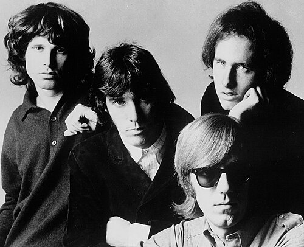

The doors

The Doors were an American rock band formed in Los Angeles in 1965, comprising vocalist Jim Morrison, keyboardist Ray Manzarek, guitarist Robby Krieger, and drummer John Densmore. They are considered one of the most innovative, influential, and eclectic rock bands in history, primarily due to their pioneering experimentation with a great variety of musical styles and techniques and Morrison's poetic lyrics and evocative voice. The group is widely cited as a major representative of the era's counterculture.